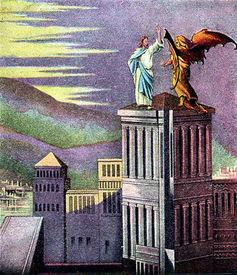

1623
四十昼夜 Throughout these Lenten days and nights
|
|
|
|
1 Throughout these Lenten days and nights
we turn to walk the inward way,
where, meeting Christ, our guide and light,
we live in hope till Easter day.
2 The pilgrim Christ, the Lamb of God,
who found in weakness greater power,
embraces us, though lost and flawed,
and leads us to his rising hour.
3 We bear the silence, cross, and pain
of human burdens, human strife,
while sisters, brothers help sustain
our courage till the feast of life.
4 And though the road is hard and steep,
the Spirit ever calls us on
through Calvary’s dying, dark and deep,
until we see the coming dawn.
5 So let us choose the path of one
who wore, for us, the crown of thorn,
and slept in death, that we might wake
to life on Resurrection Morn!
6 Rejoice, O sons and daughters! Sing
and shout hosannas! Raise the strain!
For Christ, whose death Good Friday brings,
on Easter day will live again!
|
1、
四十昼夜大斋期间，转向内心省察途径，
寻求基督光照指引，盼望复活之日来临。
2、
上主羔羊基督在世，软弱之中显主刚强，
接纳迷失、无助人类，引领迈向复活真相。
3、
但愿立志随主前行：他戴荆冠代我受刑，
他经死亡赐人生命，他已复活，使我苏醒。
4、
属主儿女今当欢欣，和散那歌，高声呼应，
因主十架牺牲受刑，复活之日生命更新！
【四十晝夜】
詩集：彩虹約定
魔鬼慣蒙混，謊言真太多，
耶穌倚靠神話語，試探中跨過，
四十晝夜，荒郊曠野，聖靈充滿下，
救主基督靠父神應許，將圈套粉碎，
拒絕誘惑，更新變化，聖靈牽引下，
門徒學習靠父神應許，將奸計擊退。
|


Notes
TALLIS CANON is one of
nine tunes Thomas Tallis (PHH
62) contributed to Matthew Parker's Psalter (around
1561). There it was used as a setting for Psalm 67. In the original tune
the melody began in the tenor, followed by the soprano, and featured
repeated phrases. Thomas Ravenscroft (PHH
59) published the tune, with the repeat phrases omitted, in his Whole
Book of Psalmes (1621). The Ravenscroft version is the setting
that virtually all modern hymnals use for this text.
TALLIS CANON is a
round most congregations can easily sing in two parts, especially when
women sing the first part and men sing the second. The congregation
could also sing the hymn as a four-part round (each entry at four
beats). Try also to sing unaccompanied (organists could sound the first
phrase of each entry and then sing along).
--Psalter Hymnal
Handbook, 1988
|
|
|
https://jesuslovesyou.online/%E5%9B%9B%E5%8D%81%E6%99%9D%E5%A4%9C/
https://www.umcdiscipleship.org/resources/throughout-these-lenten-days-and-nights
Throughout These Lenten Days and Nights
Words by James Gertmenian
Music by Jean StrathdeeAlthough filled with images and symbols of Lent, this
hymn continually looks forward to the hope of Easter and Resurrection.
Churches with an active CCLI, OneLicense or LicenSing music license may
download and use these words. Others must ask permission prior to use from Hope
Publishing, who owns the words.
"Throughout These Lenten Days and Nights" (Sibelius)
"Throughout These Lenten Days and Nights" (pdf)
https://kknews.cc/news/3oply33.html
聖經里的故事：耶穌禁食40晝夜後，3次遭魔鬼試探，他如何應對？
2018-09-05 由 莫三小給 發表于資訊
《馬太福音》第4章第1—11節，記述耶穌在曠野禁食40晝夜後，3次受魔鬼的試探。

耶穌究竟是如何回應魔鬼試探的？
第一次試探：石頭變餅
魔鬼見耶穌餓了，就試探他，讓他把石頭變成餅。耶穌拒絕說：「人活著不是單靠食物，乃是靠上帝口裡所出的一切話。」（《申命記》第8章第3節）——耶穌認為他將要宣傳的天國不僅要解決人的肉體生活問題，更主要的是解決宗教生活問題、精神生活問題。

第二次試探：從殿頂跳下
魔鬼又試探耶穌，讓他從聖殿頂上跳下去，以證明經書上所記的話：「因他要為你吩咐他的使者，在你行的一切道路上保護你。他們要用手托著你，免得你的腳碰在石頭上。」（《詩篇》第91篇第11—12節）耶穌拒絕說：「不可試探主你的上帝。」耶穌認為實現天國的方式不能鋌而走險，不能靠運氣。

第三次試探：要耶穌向他下拜
最後魔鬼要耶穌向他下拜，它就答應讓耶穌做世上萬國的君王。耶穌回答：「當拜主你的上帝，單要事奉他。」耶穌認為自己作為彌賽亞不是像一般猶太人通常所期望的來建立世俗帝國征服世界，他要建立的是一個超越世俗的天國。
這樣，耶穌拒絕了一般人所期望的彌賽亞所走的道路，而選擇了一條「受難的彌賽亞」的道路。他不是世俗的君主、英雄、鬥士，而是耶和華的受苦的僕人，這正應了《舊約》上的話：「耶和華卻定意將他壓傷，使他受痛苦。耶和華以他為贖罪祭……有許多人因認識我的義僕得稱為義……」（《以賽亞書》第53章第10—12節）。

《基督在曠野受試探》Juan de Flandes 約1460-1519，早期尼德蘭畫派畫家
原文網址：
https://kknews.cc/culture/av3vpnn.html


畫家Simon Bening 1483-1561《基督受試探》1525-1530
原文網址：https://kknews.cc/culture/av3vpnn.html

William Blake《最初的試探》1616
原文網址：https://kknews.cc/culture/av3vpnn.html
https://kknews.cc/history/gz2p42y.html
歷代所盼望的 第十三章 得勝
（本章根據：太4:5-11； 可1:12,13； 路4:5-13）
下載全新BEA Mall App參加HK$1及半價激安抽獎 Sponsored by 東亞銀行有限公司
「魔鬼就帶他進了聖城，叫他站在殿頂上，對他說：『你若是上帝的兒子，可以跳下去，因為經上記著說：『主要為你吩咐他的使者用手托著你，免得你的腳碰在石頭上。』』」
撒但以為，他現在是用耶穌自己的方法來對付他了。這狡猾的仇敵居然也抬出「上帝口裡所出的話」來。撒但仍然以光明天使的外貌出現，並且很明顯，他熟悉聖經，也明白其中的意義。在前一次試探中，耶穌用上帝的話來支持自己的信心；這一次，試探者也用上帝的話來掩飾他的欺騙。撒但聲稱，方才自己不過是要試探耶穌的忠貞，現在則對他堅定不移的信心表示讚賞。既然救主已顯示了信靠上帝的心，撒但就慫恿他再給出一個憑據，來證明他的信心。

但是，這一次試探的開頭又帶著不信的暗示：「你若是上帝的兒子」。撒但要引誘基督回答這個「若」字，但基督絲毫不給疑惑留地步。他決不肯為了給撒但一個證據，而冒性命的危險。
魔鬼試圖利用耶穌人性的軟弱，慫恿他擅自冒險。可是他不能強迫人犯罪，只能用誘惑的手段。他對耶穌說：「跳下去。」他知道不能把耶穌推下去，否則上帝必定伸手相救。他也不能強逼耶穌自己往下跳。除非基督甘願順從引誘，否則他決不能被撒但戰勝。地上或陰間所有的權勢，都不能強逼耶穌在他父的旨意上有絲毫偏離。
試探者不能強迫我們行惡。除非人願意，撒但是不能支配人心的。只有意志先予以贊同，握住基督能力的信心先行放鬆，撒但才能在我們身上施展他的魔力。但是，我們心中每一個犯罪的慾念，都給撒但提供了一個立足點；我們與神聖標準之間的每一分差距，都是一扇為他敞開的門，放他進來試探我們、毀滅我們。人類的每一個過失、每一次失敗，都給撒但留下了毀謗基督的機會。
當撒但引述上帝的應許：「主要為你吩咐他的使者」時，他刪去了「在你行的一切道路上保護你」這句話。也就是說，在上帝所揀選的一切道路上保護他。耶穌不肯偏離順從的道路。耶穌固然完全信任他的父，但他決不願擅自置身於危險之中，使他的父不得不出面干涉，救他脫離死亡。他決不願勉強上帝援救他。若是如此，他就不能給人作信靠和順從的榜樣了。
古代，以色列人在曠野里乾渴難忍，要摩西給他們水喝。他們呼喊說：「耶和華是在我們中間不是？」（出17:7）現在耶穌應付撒但的話「經上說：『不可試探主你的上帝』」，正是重述摩西當年對以色列民的回答。上帝為以色列人行了許多奇事，然而他們一遇患難就生出懷疑，竟還要求上帝拿出憑據來證明他的同在。他們因為不信，就想試探上帝，現在撒但也想鼓動耶穌這樣作。上帝已經宣布耶穌是他的愛子，現在還要什麼憑據來證明這一點呢?試探上帝的話，也就是試探上帝。我們若向上帝求他所未曾應許的事，同樣是在試探他，也就顯明了我們的不信。我們向上帝祈求，不是要試驗他是否會成就他的話，而是因為相信他一定要成就；不是要試驗他是否愛我們，而是因為他確實愛我們。「人非有信，就不能得上帝的喜悅；因為到上帝面前來的人，必須信有上帝，且信他賞賜那尋求他的人。」（來11:6）
但信心並不是自以為是。只有具備了真正的信心，才能確保不自作主張。因為自以為是的精神是撒但用來假冒信心的。真正的信心能握住上帝的應許，並結出順從的果子。擅作主張的人也能提出上帝的應許。但他們只是像撒但所作的一樣，要利用這些應許來原諒罪惡。本來，信心能引領我們的始祖依靠上帝的愛、服從他的命令。但他們卻擅作主張，以致違犯了他的律法，還指望他的大愛會救他們脫離犯罪的後果呢。單單要求上天的恩典，而不履行蒙憐憫的條件，這絕不是信心。真正的信心是以聖經的應許和條件為根據的。
在撒但無法使我們懷疑上帝時，便往往煽動我們犯擅作主張的罪。若能使我們置身於不必要的試探之中，撒但就勝利在望了。凡行走順從之路的人，上帝必會保守；但是一偏離正路，人就進入了撒但的勢力範圍開始冒險，在那裡我們免不了要跌倒。救主曾囑咐我們：「總要警醒禱告，免得入了迷惑。」（可14:38）默想和禱告能保守我們，不至於擅自行走危險的道路，從而免去許多失敗。
然而在我們受試探攻擊時，也不該失去勇敢的心。在艱難的環境中，我們往往會懷疑上帝的靈是否還在前引領。但耶穌是在聖靈的引導下到曠野受試探的。上帝把我們放在試煉中，是要使我們得益處。耶穌沒有臆測上帝的應許，擅自走向試探。及至試探臨身，他也沒有自暴自棄、灰心喪志。我們也該這樣行。「上帝是信實的，必不叫你們受試探過於所能受的。在受試探的時候，總要給你們開一條出路，叫你們能忍受得住。」他說：「你們要以感謝為祭獻與上帝，又要向至高者還你的願，並要在患難之日求告我，我必搭救你，你也要榮耀我。」（林前10:13；詩50:14,15）
在第二次試探中，耶穌又一次得了勝。於是，撒但露出了他的真面目。但他並不是一個醜陋的怪物腳上布滿了長毛，長著一對蝙蝠的翅膀。雖然已經墮落，但他還是一個大能的天使。他宣稱自己為叛逆的領袖和這世界的神。
撒但將耶穌帶上高山，將地上的萬國與萬國的榮華，全部展現在他眼前大廈聳立的城市，雲石的宮殿，一望無際的沃土和果實纍纍的園林。一切罪惡的痕跡都隱匿不見了。片刻之前，耶穌還置身於陰翳荒涼的曠野中；如今，卻望見一片無比可愛的繁華景象。於是，試探者說：這一切權柄榮華，我都要給你；因為這原是交付我的，我願意給誰就給誰。你若在我面前下拜，這都要歸你。
基督只能通過苦難來完成使命。他所面臨的是憂傷、艱苦和奮鬥的一生，最後還要蒙羞而死。他必須背負全世界的罪擔，忍受與天父之愛隔絕的痛苦。現在，那試探者表示願意放棄他所篡奪的王位，基督就得到一個機會來承認撒但的主權，以逃脫將來可怕的遭遇。但這樣做，就等於在善惡的大鬥爭中向敵人屈服。撒但先前在天上犯罪，就是企圖高舉自己在上帝的兒子以上。如果他的狡計能奏效，叛逆的勢力就勝利了。
撒但對基督說：世界萬國和其中的榮華都交給我了，我願意給誰就給誰。這話只有部分正確，是為了要達到他欺騙的目的。撒但的統治權原是從亞當手中奪來的，但亞當並不獨自行使王權，他是創造主的代理人。地球本屬於上帝，而上帝已經將萬有交給他的愛子。所以，亞當的統治權隸屬於基督。在亞當將統治權斷送給撒但時，基督仍然是合法的君主。從前，耶和華向尼布甲尼撒王所說：「至高者在人的國中掌權，要將國賜與誰，就賜與誰」（但4:17），就是肯定了這一點。撒但只能在上帝許可之下行使他所篡奪的權柄。
試探者表示，願意將世界和其中的榮華奉給基督，他其實是企圖要基督讓出他真正的王權，而在撒但的權下作王。這也是猶太人所盼望的王權，他們希望得到屬世的國度。如果基督答應給他們這樣的國，他們就會欣然接待他了。殊不知，在這樣的國中，依然有罪惡的咒詛和一切禍患存在。基督對試探者說：「撒但退去吧！因為經上記著說：『當拜主你的上帝，單要侍奉他。』」
這曾在天上挑起背叛的撒但，企圖將地上的萬國送給基督，從而收買他，使他臣服於罪惡的權勢。但基督絕不出賣自己。他是來建立一個公義之國的，這個宗旨他決不會放棄。相比之下，撒但這個策略用在人類身上，就成功得多了。撒但將世界上的國權賜給人，是以承認他的主權為條件的。他要他們犧牲正義、不顧良心、放任私慾。基督吩咐世人先求上帝的國和他的義，撒但卻湊到他們身邊說：考慮永生的問題固然不錯，不過若想在世界上獲得成功，你就必須侍奉我。我掌握著你的幸福，我能給你財富、享樂、榮譽和快樂。你要聽我的勸告，不要讓什麼誠實、自我犧牲等荒誕的觀念迷惑你，我必在你面前為你開路。許多人就這樣受了欺騙。他們願意為自己而生活，於是撒但便心滿意足了。他用獲得屬世權柄的希望引誘世人，藉以轄制人心。但是，撒但給人的權柄，本不屬於他自己，而且很快就要從他手中奪去。作為交易，他騙取了人類以上帝兒子的名分承受基業的特權。
撒但曾對於愛子耶穌的身份提出疑問。耶穌的一句斷然斥責，就使他無法反駁。這時，神性透過受苦的人性，忽然閃耀出來。撒但無力反抗這命令，他在恥辱和憤怒之中，被迫從世界的救贖主面前敗退。基督現在的勝利同亞當從前的失敗同樣徹底。
我們也可以這樣抵擋試探，迫使撒但離開我們。耶穌順從且相信上帝，就戰勝了撒但。他藉著使徒對我們說：「故此，你們要順服上帝。務要抵擋魔鬼，魔鬼就必離開你們逃跑了。你們親近上帝，上帝就必親近你們。」（雅4:7,8）
我們不能救自己脫離試探者的勢力。他已經制勝了人類，我們若想靠自己的力量抵抗他，就必中他的詭計。但是「耶和華的名是堅固台，義人奔入，便得安穩。」（箴18:10）
即使是最軟弱的人，只要仰賴耶穌的聖名，撒但就必從他面前戰兢逃跑。
P
仇敵退去之後，耶穌倒在地上，精疲力盡，臉色蒼白如同死人。天上的使者關注這場較量，目睹他們敬愛的元帥經歷無法形容的痛苦，為我們打開了生路。他已經忍受了試煉，遠超過我們所要忍受的。現在，上帝的兒子像瀕死的人倒在地上，就有天使來伺候他。他們用食物加強他的體力，並以天父之愛和全天庭同聲慶賀他勝利的消息安慰他。基督甦醒過來，他寬宏仁厚的心向人類動了慈念，就勇往直前去完成他已著手的工作。不將仇敵消滅，不將墮落的人類贖回，就決不罷休。
只有當得贖之民與救贖主一同來到上帝面前時，才能體會到救贖的代價是何等昂貴。永遠家鄉的榮美出現在眼前時，我們就要想起，耶穌曾為我們的緣故撇棄這一切。他不僅離開天庭作了天涯遊子，而且為我們冒了失敗和永遠喪亡的危險。那時，我們就要將冠冕放在他腳前，高唱：「曾被殺的羔羊是配得權柄、豐富、智慧、能力、尊貴、榮耀、頌讚的。」（啟5:12）
原文網址： https://kknews.cc/history/gz2p42y.html